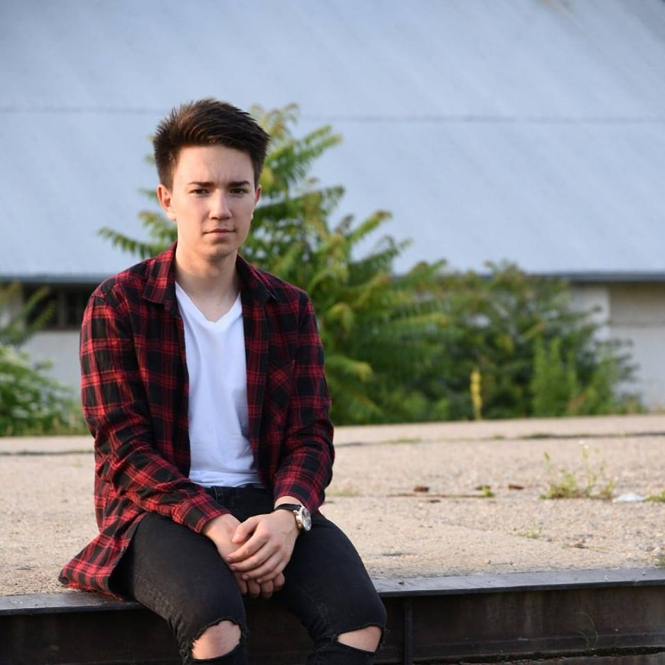

Who am I?
First of all,my name is Robert Alin Coroama and I am from Romania.I am a 19-year-old guy full of dreams and aspirations.I am interested in technology and especially graphic design, but unfortunately, I have much to learn in this field.
I am a sociable person, I like to communicate and to know new people implicitly new conceptions and mentalities, in order to improve my perceptual attitude in general.
I am also passionate about animals since I was very young, which is why I have been involved in various volunteer acts in this field
Despite my sociability, I am sometimes shy because of my lack of trust towards my own person.
However, I get used to people around me quickly and manage to overcome this mental obstacle.
Here in Denmark I live with my mom at the moment, but soon I will move to my own place / student dormitory then I will manage my personal life of course.
